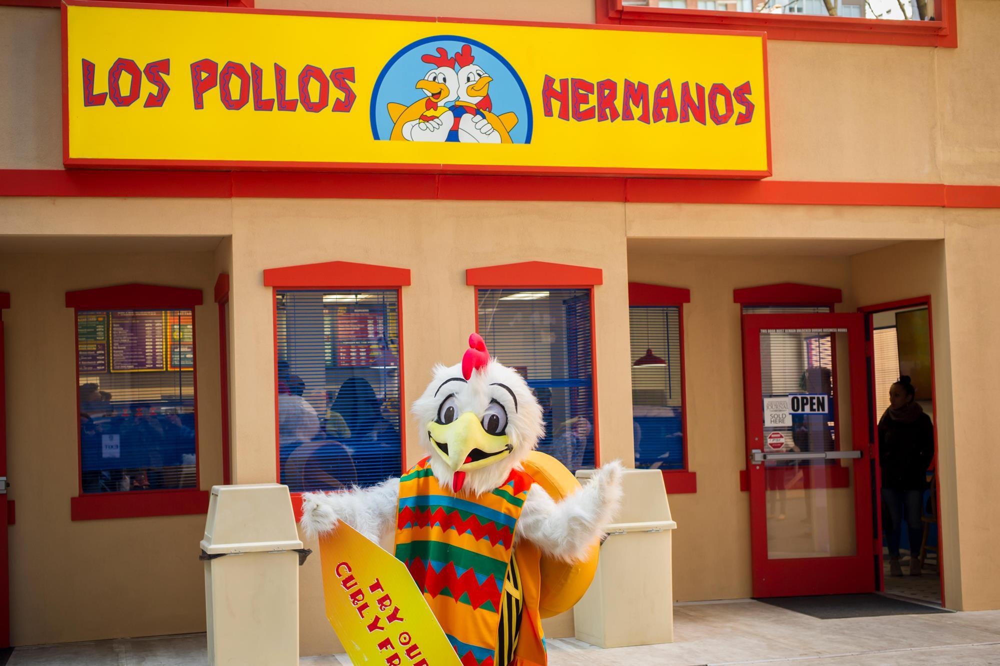

Sobre Nós
Bem-vindo ao Los Pollos Hermanos, onde a tradição e o sabor se encontram para proporcionar uma experiência única. Fundado com a missão de servir comida deliciosa em um ambiente acolhedor, nosso restaurante se tornou sinônimo de qualidade e satisfação.
Inspirado por receitas familiares e técnicas culinárias artesanais, nossos pratos são preparados com os ingredientes mais frescos, garantindo sempre uma refeição saborosa e inesquecível. Não servimos apenas comida — servimos momentos de felicidade compartilhados com amigos e família.
